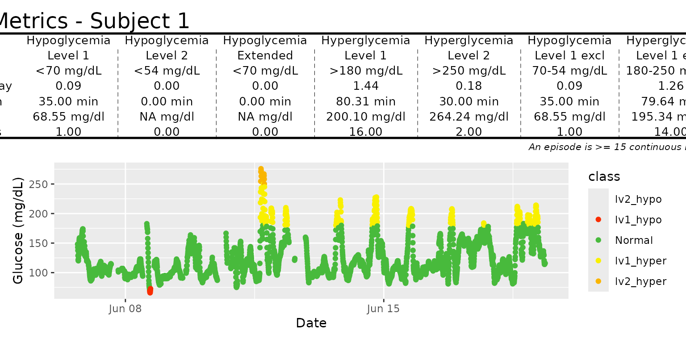

AGP_and_Episodes.RmdThe iglu package includes two single page reports - an ambulatory glucose profile (AGP), and an episode calculation report.
The iglu package allows one to generate an Ambulatory Glucose Profile (AGP) report - see Johnson (2019) “Utilizing the ambulatory glucose profile to standardize and implement continuous glucose monitoring in clinical practice.”. Below is an example report for Subject 1, which includes information on data collection period, time spent in standardized glycemic ranges (cutoffs of 54, 70, 180 and 250 mg/dL) displayed as a stacked bar chart, glucose variability as measured by %CV, and visualization of quantiles of the glucose profile across days together with daily glucose views.
agp(example_data_1_subject)
The Episode_Calculation function measures the number of episodes that hypoglycemia and hyperglycemia that occur more than a certain period.
episode_calculation(example_data_1_subject,lv2_hypo = 70, lv1_hypo = 120, lv2_hyper = 180, dur_length = 15) #> id Hypo_ep Hyper_ep hypo_duration hyper_duration low_alert #> 1 Subject 1 (Lv1) 3.14 2.64 243.8 196.90 54.89 #> 2 Subject 1 (Lv2) 0.07 1.14 25.0 85.79 0.16 #> high_alert target_range hypo_min_avg hyper_min_avg #> 1 43.9 1.21 0.55 0.44 #> 2 7.9 91.95 0.00 0.08
In this example, example_data_1_subject contains multiple days, and episode_calculation function calculate the number of episodes across days.
DataFrame object with column names “id”, “time”, and “gl”. Should only be data for 1 subject. In case multiple subject ids are detected, the warning is produced and only 1st subject is used.
Users can set certain thresholds for the hypo and hyperglycemia by passing parameters, lv1_hypo, lv2_hypo, hy1_hyper, lv2_hpyer. Level 2 indicates more severe states than level 1 so the threshold value for the lv2_hypo value should be lower than hy1_hypo value, and the threshold for the lv2_hyper value should higher than lv1_hyper value. Otherwise, the warning will be produced. Here, we are passing 70 for the hypoglycemia threshold level 2 threshold, 120 for hypoglycemia threshold, and 180 for the hyperglycemia level 2 threshold.
The function returns a dataframe including number of hypo and hyper episodes, hypo and hyper mean values, mean durations (Minutes), and average mean values per day (%).
In this example, we calculated episodes for subject 1. The average numbers of hypo and hyperglycemia for subject 1 (level 1) are 3.14 and 2.64 respectively. The mean duration for hypoglycemia is 243.8 minutes and 196.9 minutes for hyperglycemia. You can also see other values such as the mean average values for hypoglycemia and hyperglycemia, and this function can be used for multiple subjects as well (check by setting the parameter, data =example_data_5_subject).
Visualization of the metrics produced by the episode_calculation() function is done with the function epicalc_profile(). This function takes the episode_calculation() output and displays it as a tables of the episode metrics as well as plots that visualizes the subject’s glucose level over time. Like episode_calculation, this function is designed to work with one subject data at a time, and the structure of the function output is shown below.
epicalc_profile(example_data_1_subject)

The function will accept the following six parameters that are passed on to epicalc_profile(). Like episode_calculation(), there are options to adjust the hypoglycemia and hyperglycemia thresholds. If the hyperglycemia threshold is lower than the hypoglycemia threshold, a warning will be produced.
lv1_hypo” - First threshold for what below is considered hypoglycemia. Default is 100 and the units are mg/dLlv2_hypo” - Second threshold for what below is considered hypoglycemia. Default is 70 and the units are mg/dLlv1_hyper” - First threshold for what above is considered hyperglycemia. Default is 120 and the units are mg/dLlv2_hyper” - Second threshold for what above is considered hyperglycemia. Default is 160 and the units are mg/dLcolor_scheme” - String corresponding to a color scheme for the plot.Default is dark red for lv1_hypo, red for lv2_hypo, green for normal, yellow for lv1_hyper, and orange for lv2_hyper.epicalc_profile(example_data_1_subject, lv1_hypo=100, lv2_hypo=70, lv1_hyper=120, lv2_hyper=160, color_scheme="Color Scheme 1")